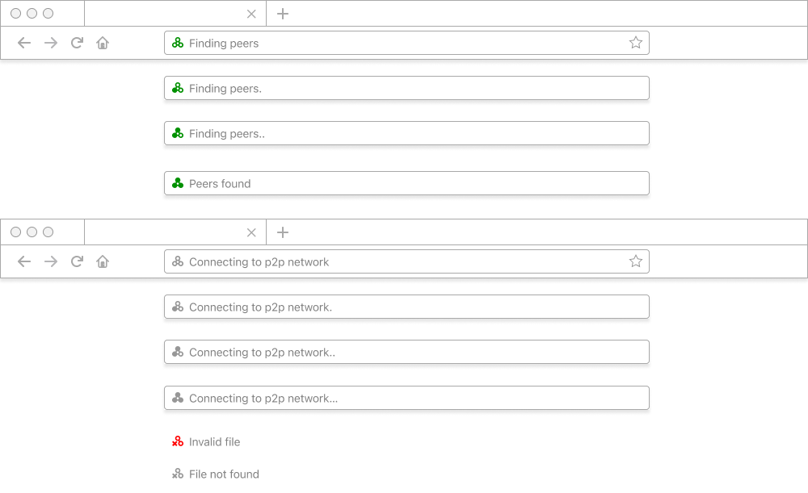
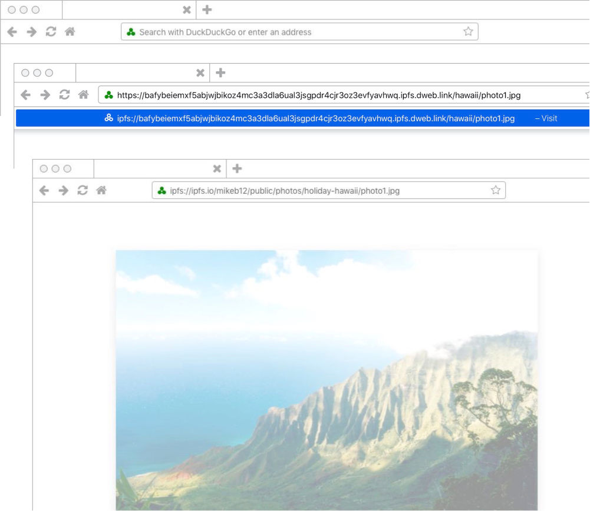
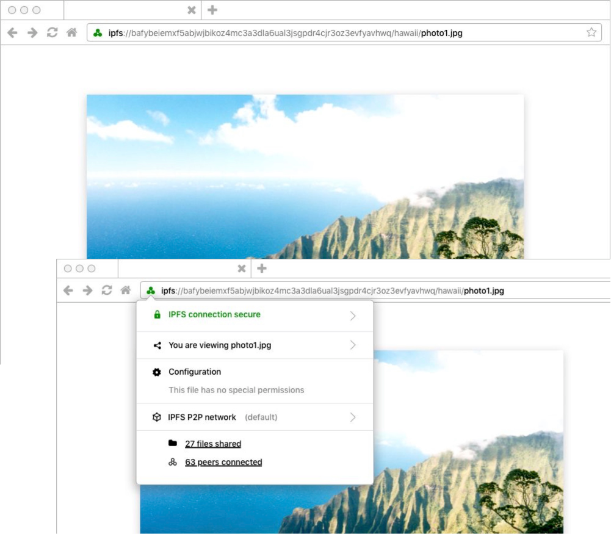

IPFS Browser Design Guidelines
Overview & Challenge
The InterPlanetary File System (IPFS) is a way to have an safer, faster, freer Internet. This new internet lives without central servers or centralised control through a protocol and peer-to-peer (P2P) network for storing and sharing data.
In preparation for a 2020-2021 expansion of Protocol Lab’s IPFS browser integrations and standardisation efforts (due to be default in the Brave and Opera browsers), Protocol Labs needed guidelines and recommendations on hand to get to their first billion users through browsers. This is what we started doing by designing how IPFS would be used in a browser.
Results
The guidelines, due to be open sourced and published, are due to be presented to the standards bodies the IETF (The Internet Engineering Task Force is the premier standards development organization (SDO) for the Internet.) and the WC3 (The World Wide Web Consortium. The guidelines provide research-based, user-centred direction as to how to replace HTTP and HTTPS with the IPFS protocol in browsers.
Research
- Landscape survey review
- Exploratory workshop with developers, experts and stakeholders
- Interview study with experts and non-expert potential users
- Analysis and findings
Design
- RecommendationsScreen designs including , iconographic and design treatments for existing browser URL bars
- User experience flows
- Design guidelines and component design to inform and help further development efforts
- Recommendations for further work



View on Github (MIT license).